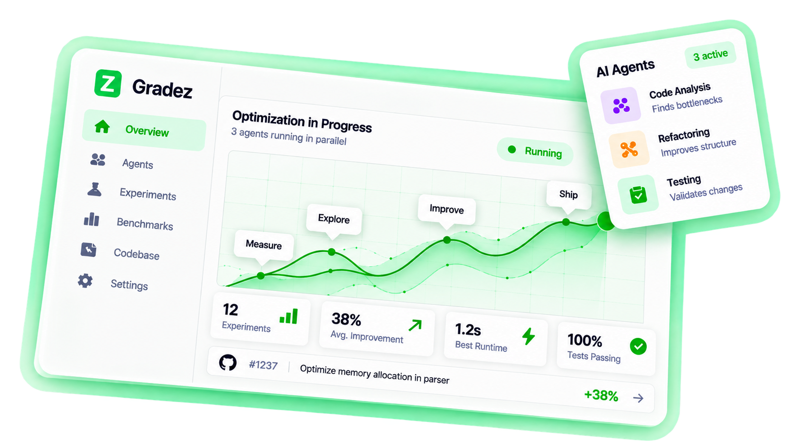

Parallel AI Agents
Run multiple agents on your codebase to explore more ideas, faster.
Gradez runs multiple AI agents on your codebase, explores ideas in parallel, runs experiments, and keeps only the changes that actually improve your metrics.

Better code
every commit.
Run multiple agents on your codebase to explore more ideas, faster.
Benchmarks, tests, and real metrics to track what actually gets better.
Built-in validation ensures quality, correctness, and reliability.
Transparent, extensible, and community-driven.
Set up benchmarks, tests, or any metric. Gradez optimizes against numbers, not guesses.
Agents make many small changes in parallel using isolated git worktrees.
Only changes that beat your baseline and pass your gates are kept.
Gradez supports hosted and local providers, with Groq as the recommended free cloud option.
Use llama-3.3-70b-versatile with a free API key from console.groq.com.
Run Claude models for deeper code reasoning and large refactors.
Use GPT models through the standard OpenAI-compatible provider path.
Run fully local models with no account, no cloud calls, and no API bill.
Installs project rules into .cursor/rules/ so agents know how to run Gradez.
Installs native skill files for discover and optimize workflows.
Everything also works directly from the terminal without an agent host.
No waitlist, no hosted platform required. Install Gradez from PyPI and run it locally.
Get started in minutes. No credit card required.